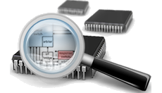
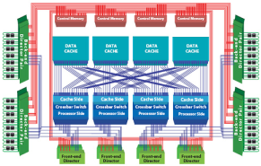

Several customers use OMNEST for the architectural exploration of high-performance computing systems, such as the design of fast interconnects, network-on-chip architectures, and more.

The component architecture helps you deal with complexity by allowing you to build the model hierarchically in a top-down or bottom-up fashion. Components can represent any level of detail that is appropriate for your simulation study, from high-level functional models down to cycle-accurate models. The component architecture also makes it possible to have multiple implementations with varying levels of detail for a given component or to replace a single component with a composite one. These features allow you to write the simulation model at the appropriate abstraction level and still have the flexibility to modify it later.
Some more points to consider:
